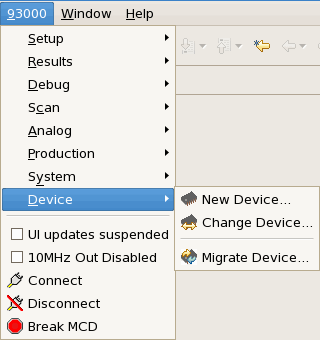
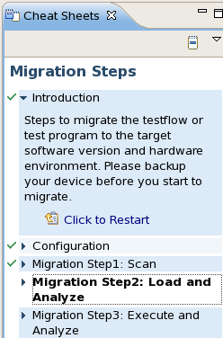

Accessing the Migration Workflow
About this task
This task shows how to access a migration cheat sheet.
Before you begin
Make sure SmarTest is running.
Procedure
To open a migration cheat sheet, proceed as follow
- From the Device Menu, select Migrate Device as shown in the next picture

Results
You have access to the migration screen as shown in the next picture.

What to do next
Configure your profile.
Functional changes
- Introduced in SmarTest 7.1.0